1Sign in and install
Use the same username and password as the college portal. Sign in once with internet; after that the app works without internet too.
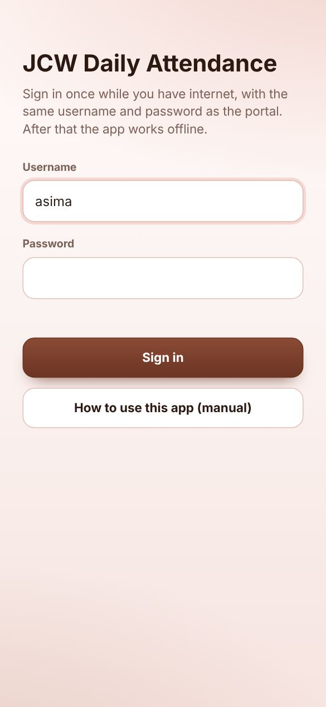
- Open the app link on your phone (Chrome on Android, Safari on iPhone) or laptop.
- Type your Username and Password and tap Sign in.
- Install it like an app so it opens from the home screen:
- Android (Chrome): menu ⋮ → Install app or Add to Home screen.
- iPhone (Safari): Share → Add to Home Screen.
- Laptop (Chrome / Edge): the install icon at the right of the address bar.
- Keep the internet on for a minute the first time: your classes and months download to the phone.
2Home screen Teacher
Home shows today's classes, test entry, student search and your sections at a glance. The three tabs at the top move between Home, Attendance and Reports.
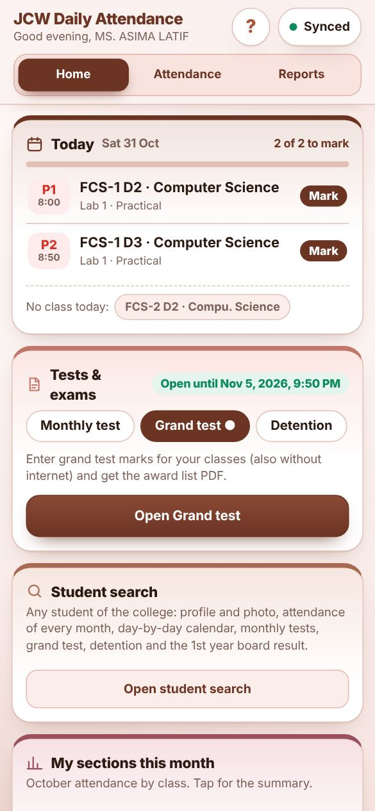
Today
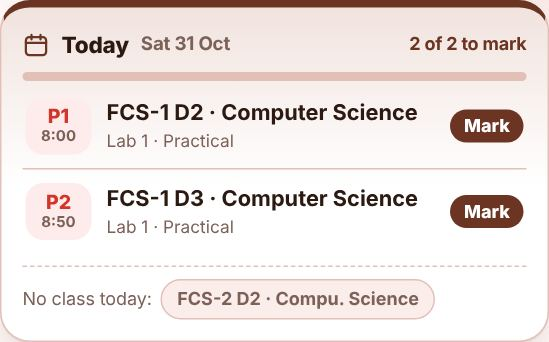
Your classes of today in period order, with the period, time and room from the college timetable. Mark opens the attendance of that class; a tick means today is already marked. The class going on now is marked Now, the next one Next.
Tests & exams
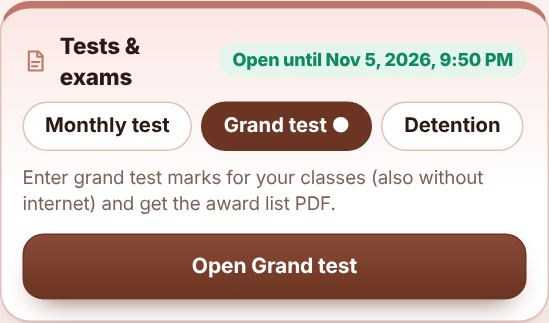
One card with three tabs: Monthly test (choose the month chip, then tap a class), Grand test and Detention. Grand test and Detention stay locked until the admin opens them (Grand test from 1 January, Detention from 1 February) and close at the deadline. A dot on a tab means it is open now.
My sections this month
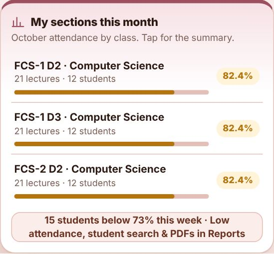
Attendance of each class you teach this month, with a bar and the number of students below 73%. Tap a class for its summary.
Below these: Student search (see 9), Students reported to Chief Proctor, My timetable and, for admin/HOD/Chief Proctor, Free teachers.
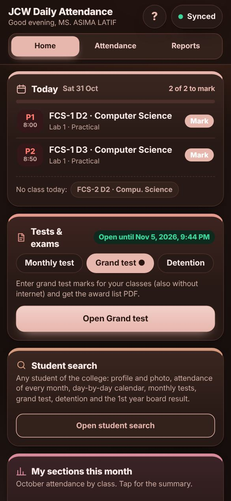
The app follows your phone's light or dark setting automatically. The colours are the Jinnah uniform colours: brown, tea pink and white. Each card has its own colour on top, so you can find it quickly.
3Mark attendance Teacher
The screen you use every day.
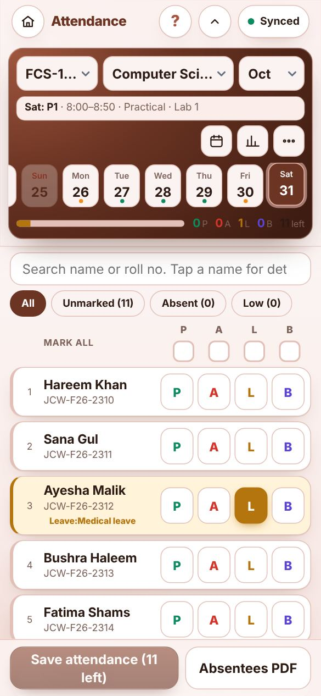
- Choose class, subject and month in the brown card at the top. The line under it shows that day's period, time, theory/practical and room.
- Tap the day in the day strip (today is already selected). A green dot = saved, orange dot = a past day not marked, yellow dot = the day has a note, ×2 = two lectures.
- Mark each student: P present, A absent, L approved leave, B bunk (in college but missed the lecture). Tap the same letter again to clear it.
- Tip: tick Mark all P first, then change only the absentees.
- Press Save attendance at the bottom. The button shows how many students are still unmarked; everyone must be marked before you can save.
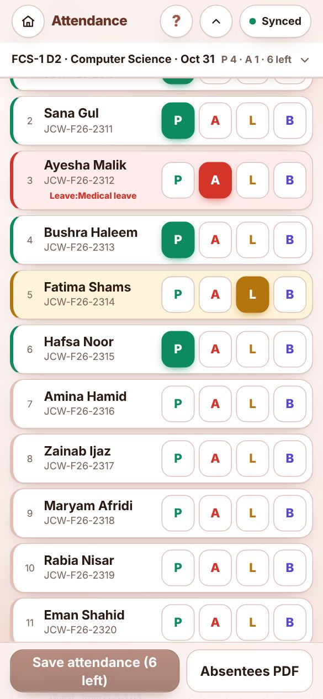
Search box and filters: type a name or roll no.; Unmarked shows only students you have not marked, Absent and Low (below 73%) the others.
Grey, struck-through students have left the subject or the college. They cannot be marked and are not counted.
Guest students (from another section) have a purple Guest tag. A guest is counted only against the lectures she was marked in.
Absentees PDF (bottom right) makes a list of today's absent, leave and bunk students with their attendance so far, ready to share on WhatsApp.
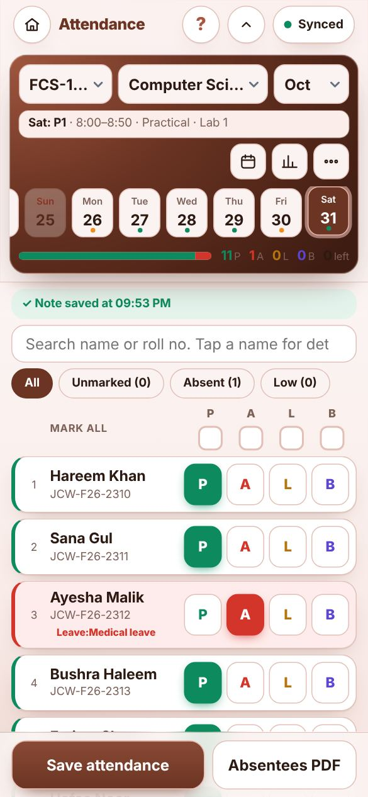
After saving, the status chip at the top right shows Synced when the marks have reached the sheet. Without internet it shows Offline or 3 to sync; the marks wait safely on the phone and go to the sheet by themselves later.
Saved a wrong mark? Open the same day (and lecture), correct it and save again. It overwrites.
4Calendar, summary and ⋯ More Teacher
Three small buttons sit in the brown card: Calendar, Summary and ⋯ More.
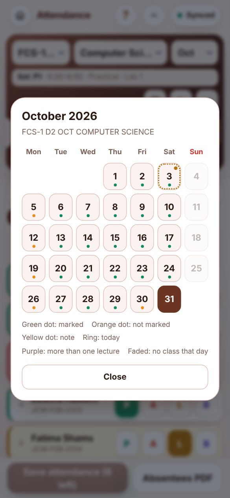
Calendar shows the whole month. Tap any date to open it and mark or correct it. If you have unsaved marks, the app asks before changing the day.
Summary shows the month for every student: lectures attended, held, percentage and the monthly test. Filter low attendance or low test, and Share list as text.
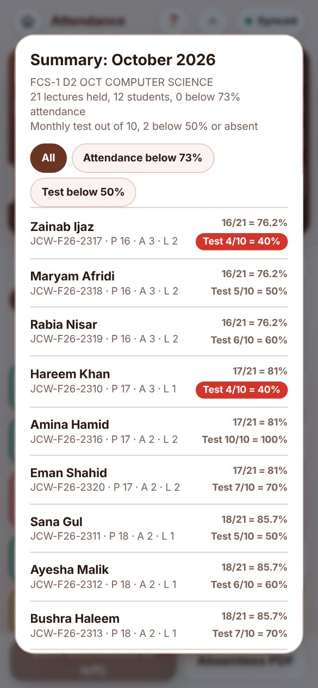
⋯ More menu
| Item | What it does |
|---|---|
| 🎙 Voice roll call | The app says each name; answer present / absent / leave / bunk (or haazir, ghair haazir, chutti). See Voice. |
| 🗣 Say the absentees | Say “absent 3, 7 and 12, leave 5”; everyone else becomes P after you press Apply. |
| Add / Edit day note | College closed, class not held, holiday. The date gets a yellow dot. |
| More than one lecture today | Adds a lecture bar 1, 2, 3… Each lecture is saved separately; the sheet shows 2P, 3P… in the day cell. |
| Add guest student | A student of another section who attends your class. Type 2+ letters of her name or roll no. |
| Print register | A designed monthly register PDF (every day colour-coded, %, test, signatures). Works offline. |
| Delete attendance | Removes the marks of the selected lecture/day. Type the day number to confirm. Needs internet; cannot be undone. |
| Text size | Normal, Large or Extra large. |
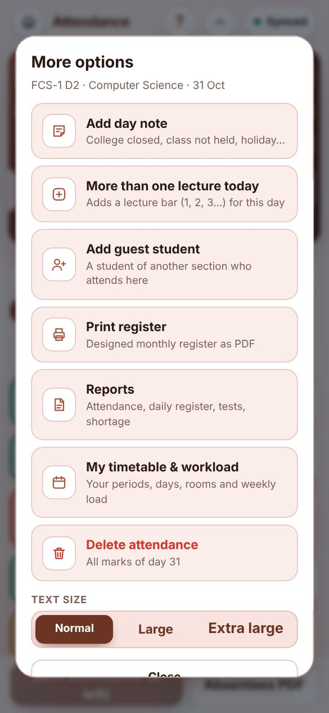
5Student window and profile Teacher
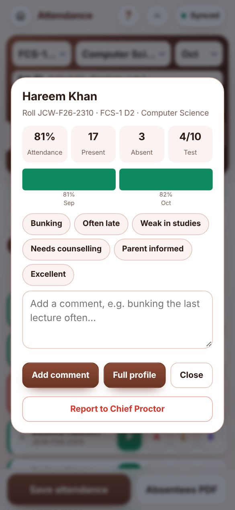
Tap a student's name on the attendance screen:
- This month: attendance, present, absent and the test mark.
- Tags (Bunking, Often late, Weak in studies, Needs counselling, Parent informed, Excellent) and comments. These are private to you and saved on the server.
- Report to Chief Proctor: choose the Chief Proctor, reason, Normal/Serious and write a statement; WhatsApp opens with the message ready. The report is also saved on the server.
- Full profile opens her page (below).
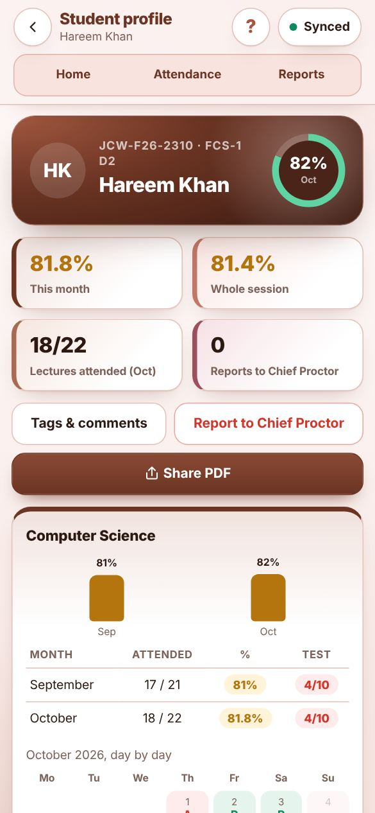
The profile shows this month and the whole session for your subject: a bar for every month, a table of attended / held / % / test, and the day-by-day calendar. Share PDF makes a profile PDF; Report to Chief Proctor and Tags & comments are here too.
For the full record of a student in all subjects, use Student search (section 9).
6Monthly test Teacher
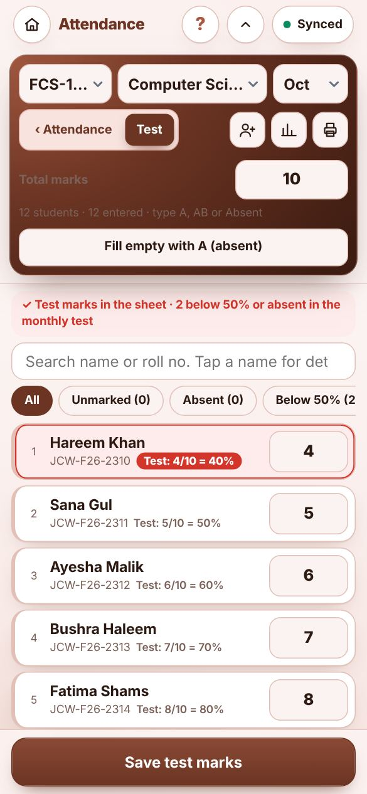
- On Home, open Tests & exams → Monthly test, choose the month chip (previous months can be opened and corrected) and tap the class.
- Enter the Total marks first (for example 10 or 20).
- Type each student's marks, or A for absent. Marks above the total are refused. Fill empty with A marks all empty rows absent (Undo is offered).
- Save test marks. Every student must have marks or A.
7Grand test Teacher
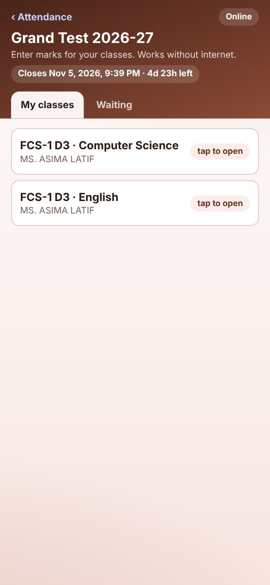
Open Tests & exams → Grand test → Open Grand test. The button is locked until the admin opens the grand test (1 January by default) and locks again after the deadline.
- Tap one of your sections/subjects (only yours are listed).
- The total marks are fixed by the admin for the whole college (for example 40); teachers cannot change them.
- Enter marks, A (absent) or L (leave) for every student. Save stays disabled until every entry is filled.
- Award list PDF makes the award list of that subject.
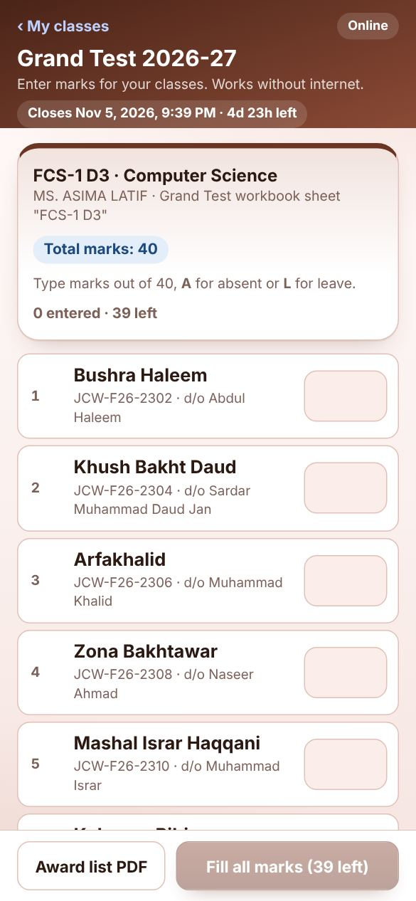
8Detention exam Teacher
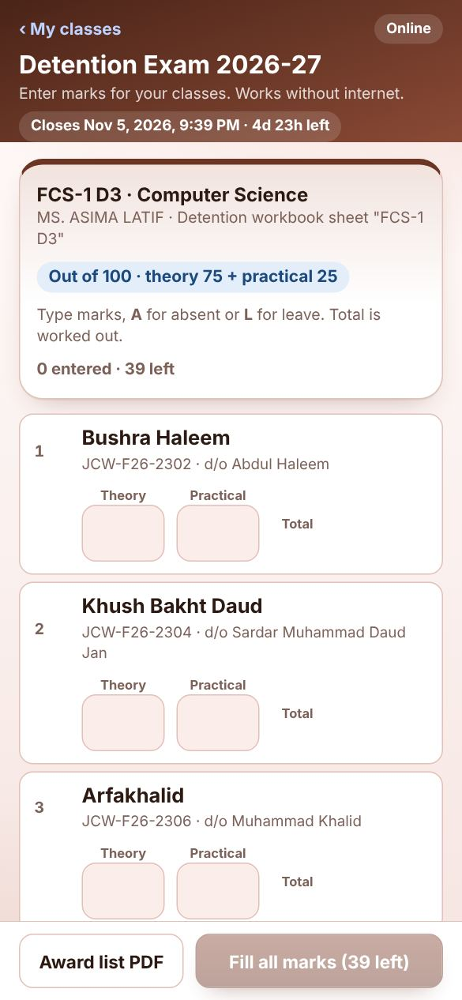
Opens from 1 February (or the date the admin sets) until the deadline, like the grand test.
| Subject | Theory | Practical | Total |
|---|---|---|---|
| Botany, Chemistry, Physics, Zoology | 85 | 15 | 100 |
| Computer Science, Geography | 75 | 25 | 100 |
| Pak-Studies, Islamiyat, Mutalia Quran | 50 | – | 50 |
| All other subjects (incl. Psychology, Statistics) | 100 | – | 100 |
Enter theory and practical (or A / L); the total is worked out by itself. Save works only when every entry is done.
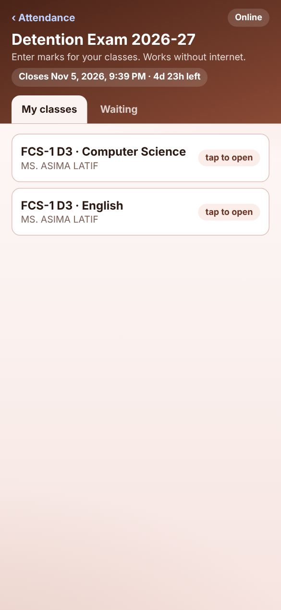
9Student search Everyone
The complete record of any student of the college in one place. Home → Student search.
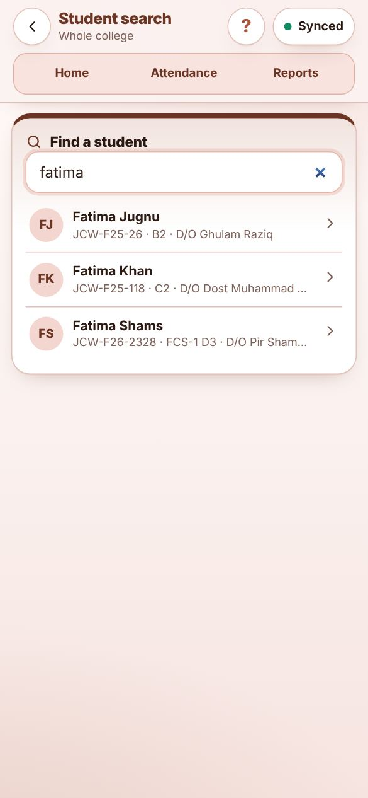
- Type at least 2 letters of the name, father name or roll no.
- Tap the student.
| Who | Sees |
|---|---|
| Teachers, HOD | Any student: photo, every profile detail, attendance, calendar, tests, board result — except contact number, email and address |
| Admin, principal, Chief Proctor | Everything, including contact number, email and address |
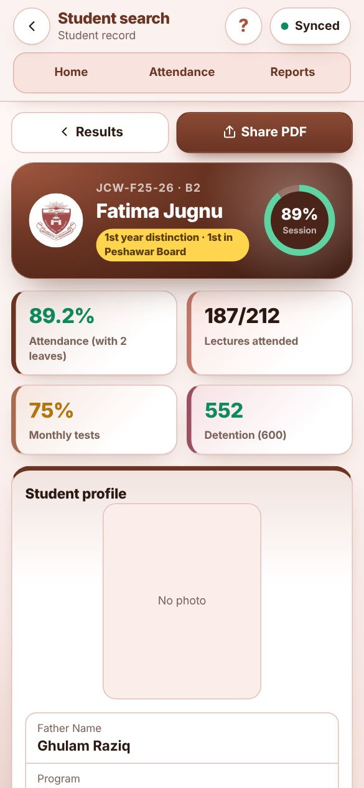
The record shows the college logo, her roll no. and section, a gold tag for a 1st-year board distinction (Peshawar Board position 1–20), the session attendance ring and four boxes: attendance (with approved leaves), lectures attended, monthly test %, detention total.
The profile has her photo and details from the strength sheet. Matric marks are shown on one line, e.g. 1176 / 1200 (98%).
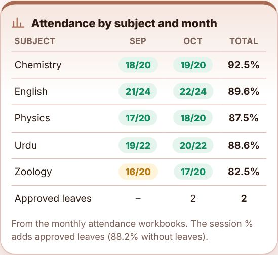
Attendance by subject and month comes from the monthly attendance workbooks: attended/held for every subject and month, approved leaves, and the total. The session % adds approved leaves (the % without leaves is shown below the table).
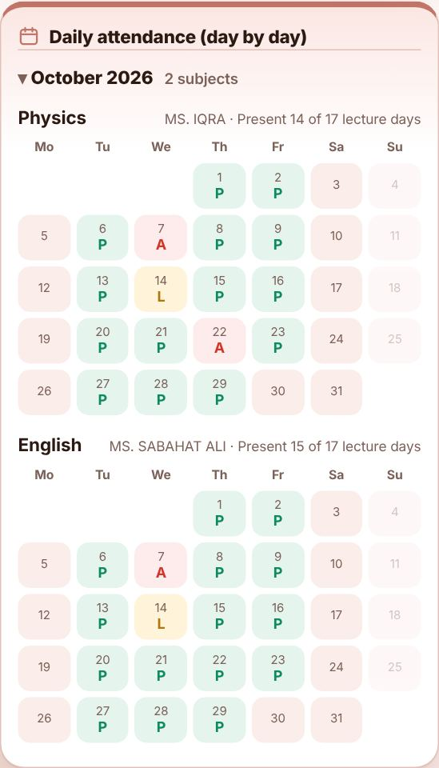
Daily attendance shows a month calendar for each subject marked day by day in the daily sheets: green P, red A, amber L, purple B. The latest month is open; tap other months to open them.
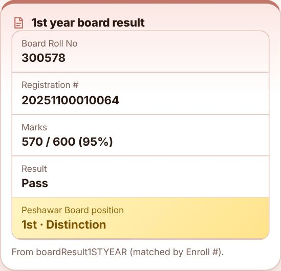
For 2nd year students: board Roll No, Registration #, Marks out of 600 with %, Result (Pass or Compartment with the subject codes) and, for the top 20 only, the Peshawar Board position · Distinction.
The record is found by Enroll # first. If the name is spelled differently, the app matches name and father name carefully; when it is not sure, admin / Chief Proctor choose the right one (Yes, this is her / Not her / This is her), and the choice is remembered.
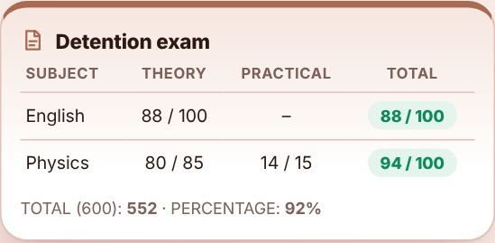
Below: Monthly tests (each month and subject), Grand test and Detention exam (theory, practical, total, TOTAL (600), percentage).
Share PDF at the top makes an exact copy of the record (all months open) to share, download or print.
10Reports
The Reports tab makes PDFs and Excel files (.xlsx in the college colours: brown header, tea-pink rows). Teachers get their own subjects; admin, principal and HOD the whole college or department.
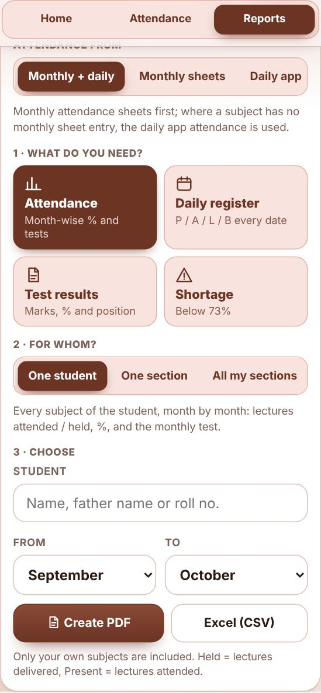
- What do you need? Attendance (month-wise % and tests), Daily register (P/A/L/B every date), Test results, or Shortage (below 73%).
- For whom? One student, one section or all your sections / the college.
- Choose the student or section, subject and months.
- Create PDF or Excel.
Further down: Low attendance this week/month, Early warning (students below 73% and at risk), and Shortcuts (shortage of the session or month, all data as Excel).
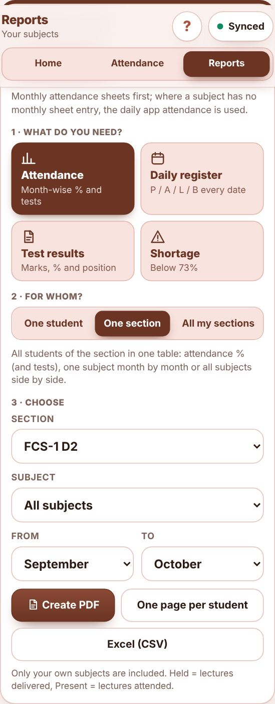
11Official sheet PDFs
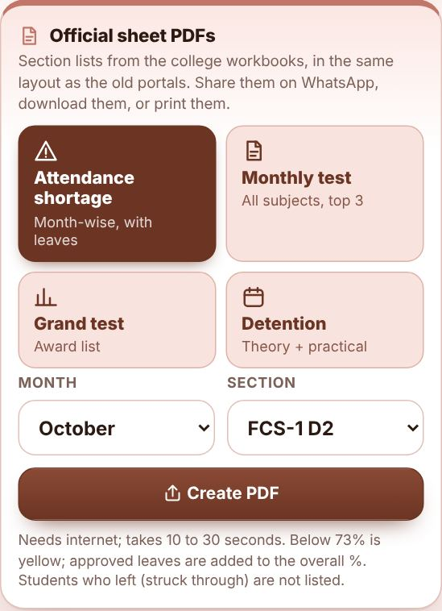
The same section lists as the old portals, made from the real workbooks:
| Report | From | Shows |
|---|---|---|
| Attendance shortage | Monthly attendance workbook of the month | T.L / A.L / % of every subject, approved leaves, overall %; below 73% yellow/red |
| Monthly test | "Month - MONTHLY TEST" workbook | All subjects; highest grey, top 3 gold/silver/bronze, absent pink |
| Grand test | Grand Test workbook | Award list with teacher names |
| Detention | Detention workbook | Theory / practical / total, N/R green, absent red, below 40% dark red, TOTAL (600) top 3 |
Choose the report, month and section, tap Create PDF (10–30 seconds). The last 8 PDFs stay under Recently made and open even offline.
12Toppers and 100% attendance
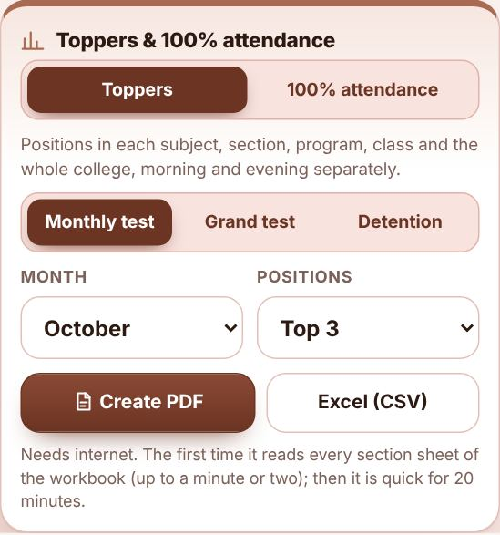
Toppers: choose Monthly test (and month), Grand test or Detention, and how many positions. The PDF has positions in the whole college, each class, each program, program + class, each section, each subject (class-wise) and the subject topper of every section — morning and evening separately. Equal marks share a position.
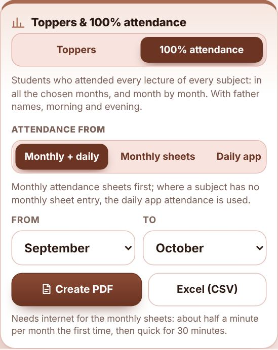
100% attendance: choose From and To months. List 1 = 100% in every chosen month; list 2 = 100% in some months (with each month's %). With father names, morning first then evening. Leave, absent and bunk break 100%.
14Account, sync and text size
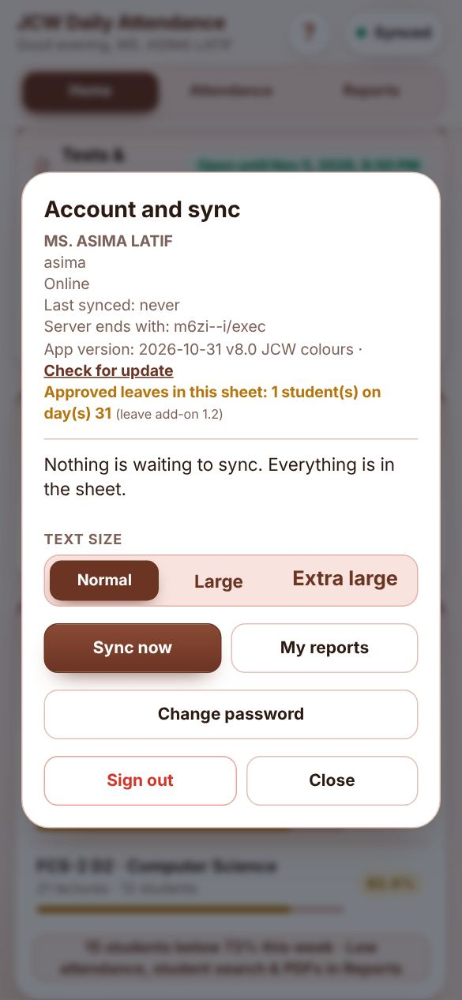
| Status chip | Meaning |
|---|---|
| Synced | Everything is in the sheets. |
| Saving… / Updating… | Sending or refreshing. |
| 3 to sync | 3 records wait on the phone. |
| Offline | No internet; keep working. |
| Red outline | A record could not be saved; open the chip to read why. |
The menu also has Sync now, Text size (Normal, Large, Extra large), My reports (Chief Proctor reports), Change password, Sign out, the App version and Check for update.
15Working offline
After the first sign-in the app opens without internet. You can mark attendance, enter monthly test, grand test and detention marks, look at your sections and make most PDFs. Everything you save waits on the phone and is sent automatically when internet returns. Student search, official sheet PDFs, toppers and admissions search need internet.
The app updates itself a few seconds after it opens with internet. To force it: status chip → Check for update.
🎙Voice: speak instead of typing, listen to the manual
The app can listen and speak. Listening (speech to text) needs internet and permission for the microphone; reading aloud works offline. Best in Chrome on Android, Chrome/Edge on a laptop and Safari on iPhone.
Voice typing
Tap in any text box (search, comments, notes, marks). A round brown 🎙 button appears at the bottom right. Tap it and speak; tap again to stop. The small button next to it switches between English and اردو. In a marks box, “seven”, “8.5” or “absent” become 7, 8.5 or A.
Voice roll call
- Open a class and day, then ⋯ More → Voice roll call.
- The app says each student’s name and the row turns highlighted.
- Answer present (yes, haazir, ji), absent (no, ghair haazir), leave (chutti) or bunk.
- Say next to skip, back for the previous student, repeat, or stop. You can tap P A L B in the window at any time.
- At the end the app tells the totals. Check the list and press Save attendance as usual. Nothing is saved by voice alone.
Options in the window: Read names aloud (turn off in a quiet room and read the names yourself), Only unmarked, and the answer language.
Say the absentees
Fastest for a big class: ⋯ More → Say the absentees, then say “absent 3, 7 and 12, leave 5” using the row numbers on the left (first names also work). The window lists what it understood; press Apply, and everyone not named becomes P. Then Save.
Speak marks (monthly test)
On the monthly test screen, enter the total, then tap 🎙 Speak marks next to “Fill empty with A”. The app says each name; say the marks or “absent”. Marks above the total are refused and asked again. Press Save test marks when done.
Listen to the manual
In the app, the ? help window has 🔊 Listen: it reads the help from where you are. In this manual, every chapter has a 🔊 button, and the bar at the top has Listen to all and the reading speed.
16Admin home Admin / principal
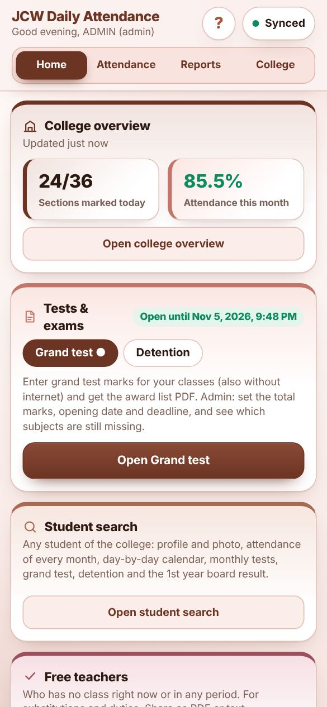
Admin and principal see a fourth tab, College (HOD: Department). Home shows the College overview (sections marked today, attendance this month), Tests & exams (with Grand test / Detention progress and settings), Student search, Free teachers and Teacher contacts, and the Admissions card (admin).
17College overview Admin / principal / HOD
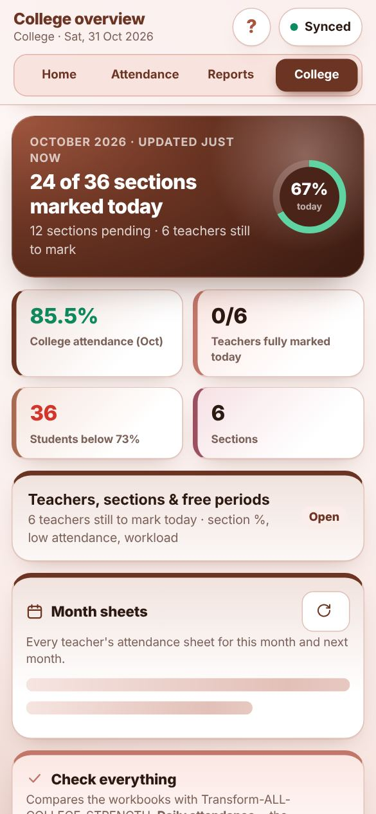
Top: sections pending today, college attendance this month, teachers fully marked today, students below 73% and the number of sections.
Teachers, sections & free periods is folded into one line; tap it to open the lists:
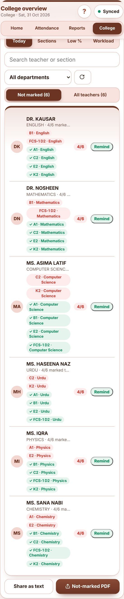
- Today: who has marked and who has not, with a Remind button (WhatsApp).
- Sections: every section-subject with its %.
- Low %: students below 73%.
- Workload: periods per teacher and free periods.
Below: Month sheets (every teacher's sheet of this and next month exists), Check everything, Health check, Left students and Admissions.
18Check everything Admin
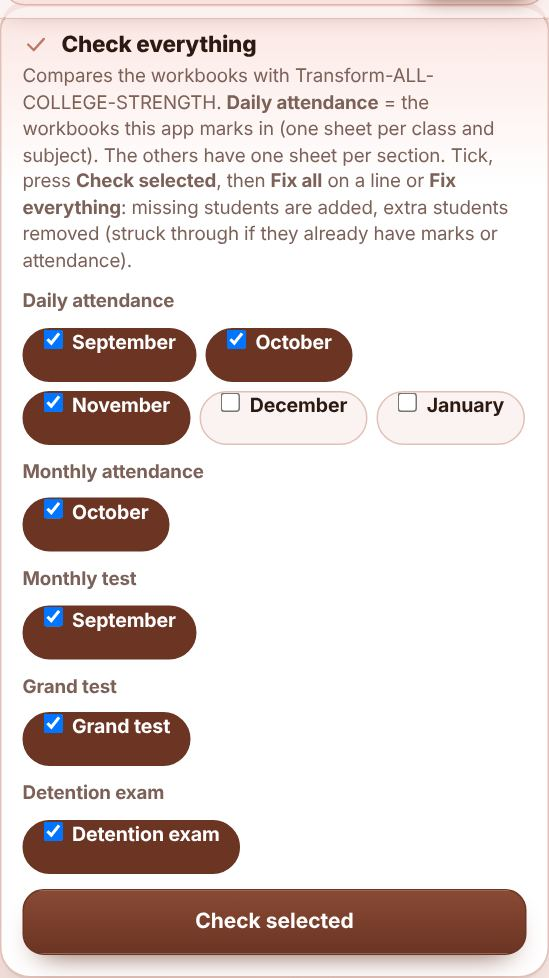
Compares every workbook with the strength sheet (Transform-ALL-COLLEGE-STRENGTH): daily attendance (Sep–Jan), monthly attendance, monthly test, grand test and detention.
- Tick the workbooks (months) to check.
- Check selected: three workbooks are checked at a time.
- Each line shows missing and extra students. Show lists them with Add / Remove; Fix all fixes one workbook; Fix everything fixes all.
19Free teachers Admin / principal / HOD / CP
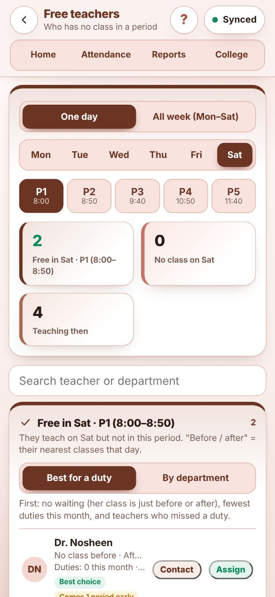
Choose the day, shift (morning / evening) and period (it opens on today and the period going on now) to see which teachers are free, for substitutions and duties. All week shows every day and period. Share as PDF or text.
20Admissions Admin
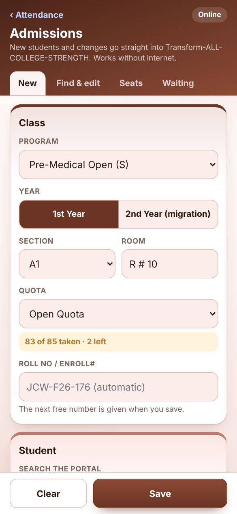
New students and changes go straight into Transform-ALL-COLLEGE-STRENGTH. Works without internet (the Waiting tab sends them later).
- New: choose program, year, section (room is filled from the timetable), quota (the seats left are shown).
- Search the portal by name to fill the student's details from the UOP portal data.
- The roll no. / Enroll # is the next free number of the program's range (given when you save).
- Subjects are filled for the group; choose electives where needed. Save shows a check of everything before writing.
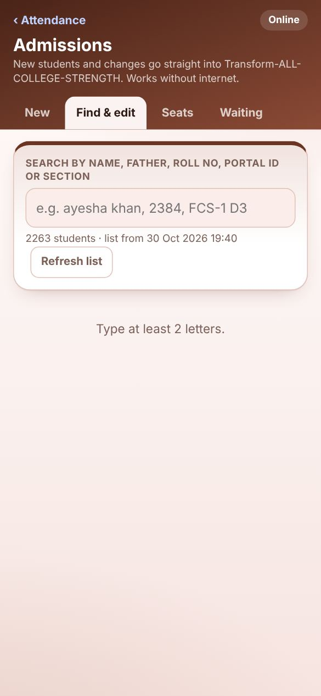
Find & edit: search any student by name, father name or roll no., change any column and save (only changed cells are written; every change goes to the Admission Log).
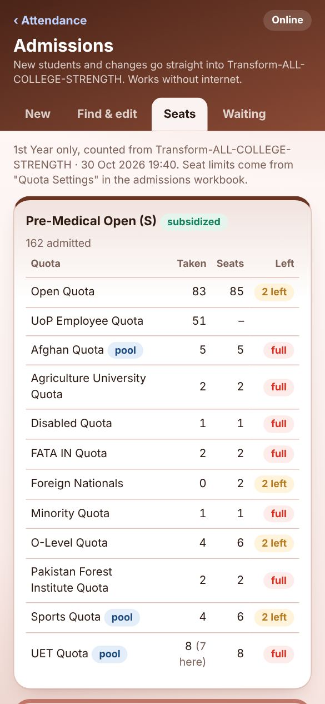
Seats: seats, filled and left for every program and quota. Afterwards run Check everything so the new students appear in the attendance and test sheets.
21Grand test / detention settings Admin

Settings tab (admin only): Opens (date and time teachers can start), Total marks (whole college, e.g. 40) and Deadline (after it the button locks again). Detention has the same Opens/Deadline settings and shows the marks scheme.
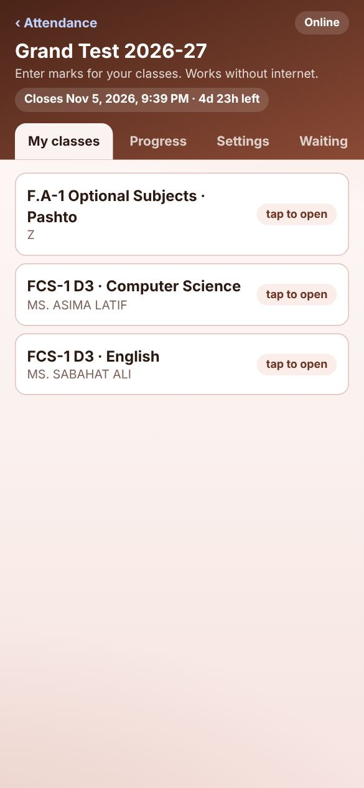
Progress: which section-subjects are complete and which still have missing marks (students who left are not counted), so you can remind the teachers.
22Problems and answers
| Problem | What to do |
|---|---|
| Letters too small | Status chip → Text size → Large or Extra large. |
| "N to sync" does not go away | Status chip → Sync now. If it says the login changed, sign in again (the waiting marks are kept). |
| A student is missing from my list | She may have left the subject (grey row) or the strength sheet has another section/subject. Tell the admin; Check everything adds her. |
| "Could not reach the server" | No internet or the internet is blocked. Try again; your work is kept. |
| "App error: …" | Send a screenshot to the admin. |
| Grand test / Detention button is locked | It opens on the date set by the admin and locks after the deadline. |
| A new feature is not on my phone | Status chip → Check for update (the app version is shown there). |
| Wrong mark saved | Open the same day and lecture, correct it and save again. |